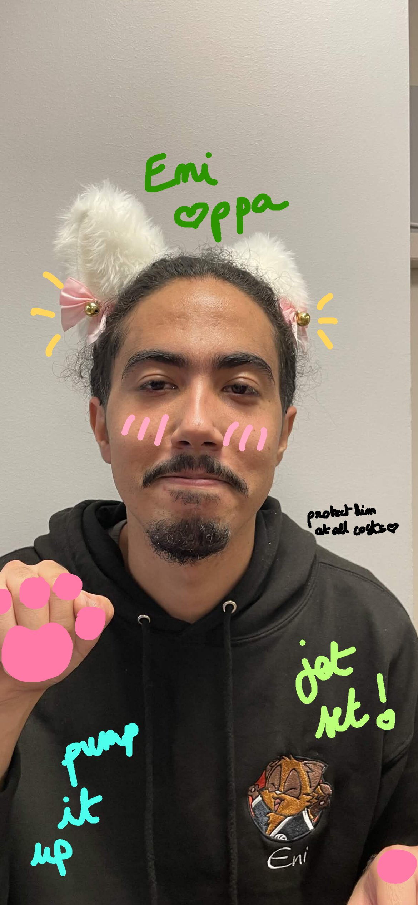
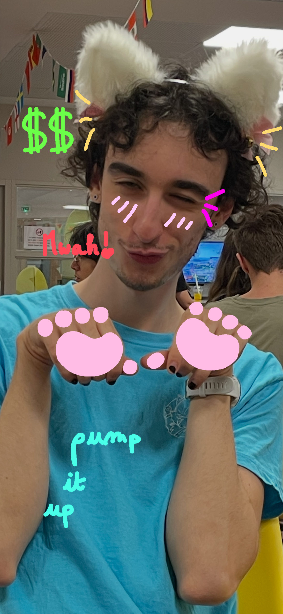

67 67 67 67 67
Au programme, mon classement des chats préférés du serveur en les notants sur 10, car comme l'a dit un grand homme, je pécho pas si c'est pas une FERME LA/10 (guys ça m'a trigger juste de commencer à l'écrire oskour), pourquoi ce choix vous allez me dire, et bien j'ai pris un template de page html sur google et ça parlait de chat
| Miaeni | Cathugo | |
|---|---|---|
| Notes |  |
 |
| Félins | Feur/10 | Aigri/10 |
Tu veux en savoir plus ? Clique ici !